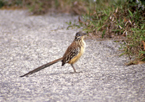
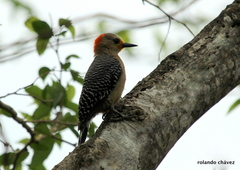
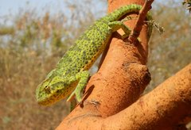
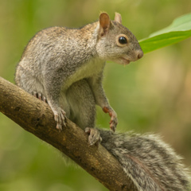

Animales nativos de México
Aves
Reptiles
Mamíferos
Anfibios
Peces
Quetzal
Cocodrilo de Río
Tlacuache Norteño
Sapo Verde Sonorense
Navajon azul
Pharomachrus mocinno
Crocodylus acutus
Didelphis virginiana
Anaxyrus retiformis
Acanthuridae coeruleus
Garrapatero Pijuy
Abaniquilllo Verde
Armadillo de Nueve Bandas
Rana de Árbol Amarilla
Esturión Del Danubio
Crotophaga sulcirostris
Anolis biporcatus
Dasypus novemcinctus
Dendropsophus microcephalus
Acipenser Sturio
Correcaminos Tropical
Abaniquillo Sedoso
Conejo Matorralero
Ajolote de Alchichica
Tiburón azotador

Geococcyx velox
Anolis sericeus
Sylvilagus bachmani
Ambystoma taylori
Alopias Vulpinus
Carpintero Yucateco
Camaleón de Senegal
Ardilla Yucateca
Salamandra Ensatina
Perro Del Norte



Melanerpes pygmaeus
Chamaeleo senegalensis
Sciurus yucatanensis
Ensatina eschscholtzii
Anarhichas Lupus
Tecolote Tamaulipeco
Turipache Aquillado
Mono Araña Centroamericano
Salamandra Pies Planos
Lenguado De Fondo
Glaucidium sanchezi
Corytophanes percarinatus
Ateles geoffroyi
Chiropterotriton orculus
Bathysolea Profundicola